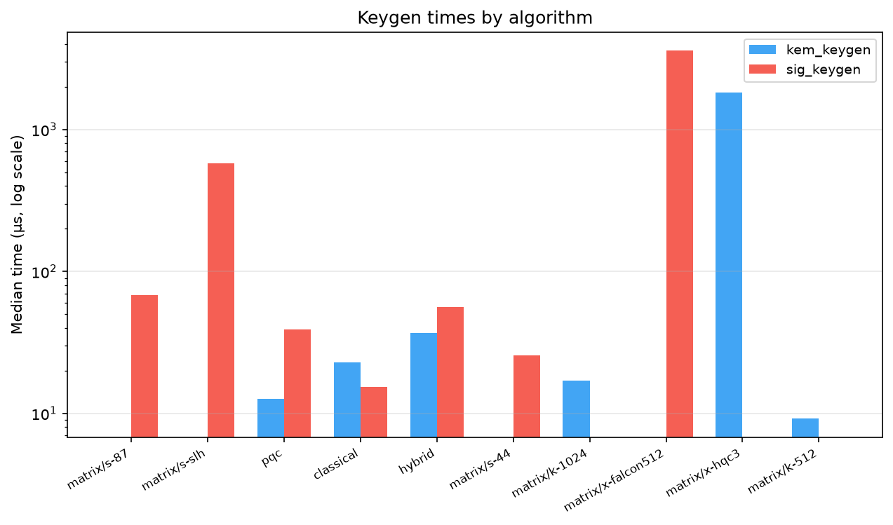
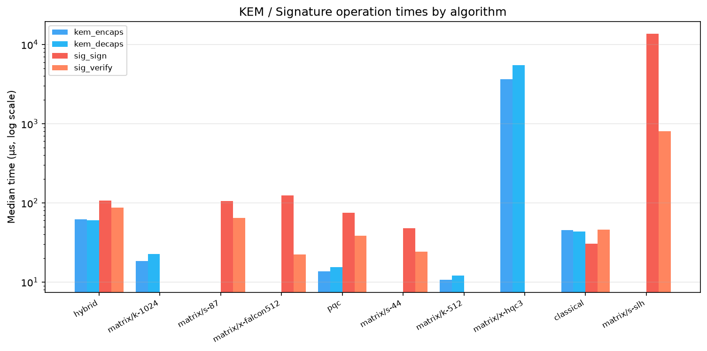
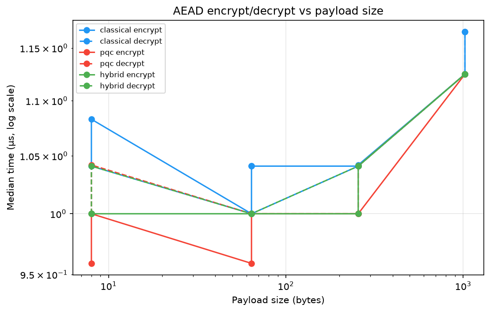
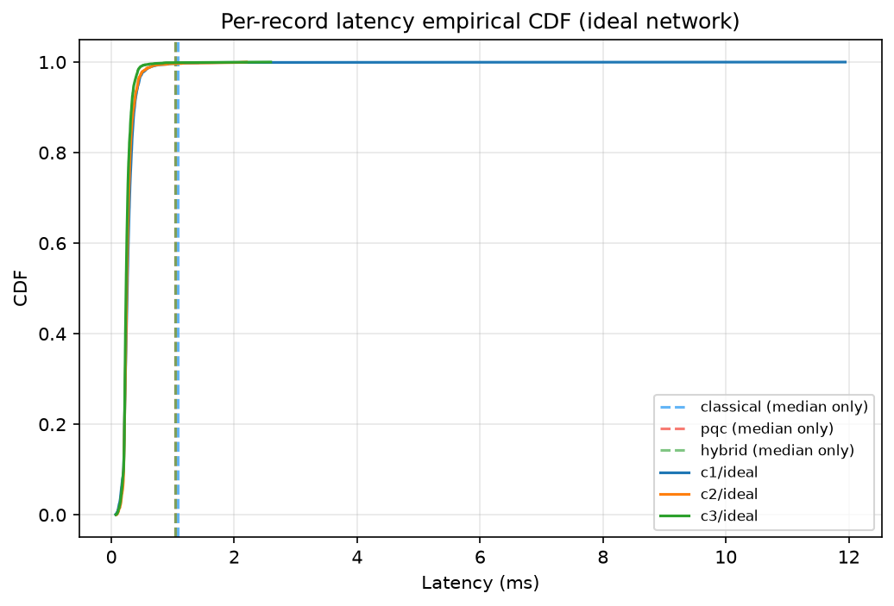
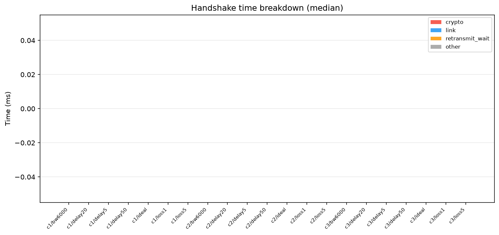
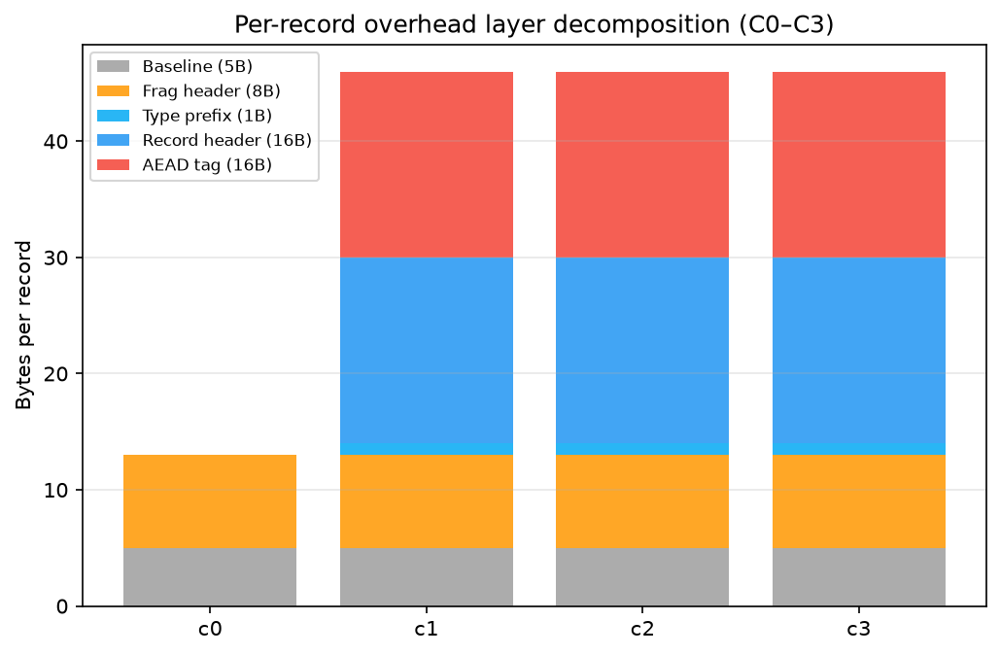
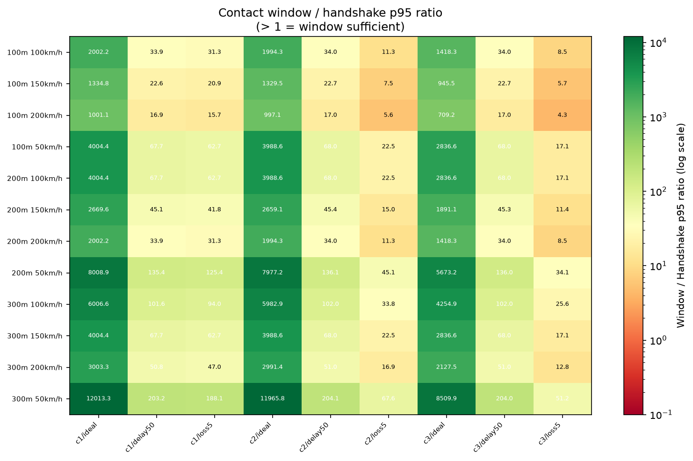

Commit: 5c9a197 Date: 2026-11-21
ANALYTICAL ESTIMATES are labelled where they appear. All other numbers are measured on the host machine listed in §2. Results are relative comparisons only; see §Limitations for scope.
This project designs and evaluates, in simulation, a gateway that lets a legacy vehicle communicate with a PQC-capable peer using a hybrid post-quantum handshake and symmetric session protection. V2V is the target application scenario. Wireless behaviour, vehicle mobility and broadcast safety messages are outside the evaluated scope and listed as future work.
| Item | Value |
|---|---|
| Platform | Apple arm64, macOS 25.6.0 |
| Python | 3.13.2 |
| liboqs | 0.16.0 |
| liboqs-python | 0.16.0.2 |
| cryptography | 50.0.2 |
| ID | Name | KEM | Signature | KDF | AEAD |
|---|---|---|---|---|---|
| C0 | Passthrough | — | — | — | — |
| C1 | Classical | X25519 | ECDSA-P256 | HKDF-SHA-256 | AES-256-GCM |
| C2 | PQC-only | ML-KEM-768 | ML-DSA-65 | HKDF-SHA-256 | AES-256-GCM |
| C3 | Hybrid | X25519 + ML-KEM-768 | ECDSA-P256 + ML-DSA-65 (dual) | HKDF-SHA-256 | AES-256-GCM |
| Test | C0 | C1 | C2 | C3 |
|---|---|---|---|---|
| T1 | accepted ✓ | rejected ✓ | rejected ✓ | rejected ✓ |
| T2 | accepted ✓ | rejected ✓ | rejected ✓ | rejected ✓ |
| T3 | accepted ✓ | rejected ✓ | rejected ✓ | rejected ✓ |
| T4 | n/a | aborts ✓ | aborts ✓ | aborts ✓ |
| T5 | n/a | fails ✓ | fails ✓ | fails ✓ |
| T6 | n/a | aborts ✓ | aborts ✓ | aborts ✓ |
| T7 | n/a | in-window once / dup rejected ✓ | in-window once / dup rejected ✓ | in-window once / dup rejected ✓ |
| T8 | n/a | survives ✓ | survives ✓ | survives ✓ |
| T9 | n/a | no-reuse ✓ | no-reuse ✓ | no-reuse ✓ |
| T10 | n/a | rekeys ✓ | rekeys ✓ | rekeys ✓ |
| T11 | n/a | rejected ✓ | rejected ✓ | rejected ✓ |
| T12 | forwarded ✓ | forwarded ✓ | forwarded ✓ | forwarded ✓ |
| T13 | n/a | fails ✓ | fails ✓ | fails ✓ |
43 cells pass (✓); 0 fail (✗) — 0 failures expected. T1–T11 and T13 also confirmed for all 13 agility matrix entries (13/13 overall_pass = pass). T12 is not applicable to the matrix — CAN bus injection is suite-independent and always forwarded (documented limitation).
| Config | Profile | Wall median (ms) | Wall p95 (ms) | HS bytes (wire) | Frags I→R | Frags R→I | Success rate |
|---|---|---|---|---|---|---|---|
| C1 | ideal | 2.54 | 3.60 | 386 | 2 | 2 | 100.0% |
| C1 | delay50 | 209.97 | 212.63 | 386 | 2 | 2 | 100.0% |
| C1 | loss5 | 26.37 | 229.71 | 386 | 2 | 2 | 100.0% |
| C1 | bw6000 | 29.72 | 33.50 | 386 | 2 | 2 | 100.0% |
| C2 | ideal | 2.41 | 3.61 | 9124 | 5 | 4 | 100.0% |
| C2 | delay50 | 209.82 | 211.69 | 9124 | 5 | 4 | 100.0% |
| C2 | loss5 | 28.67 | 639.09 | 9124 | 5 | 4 | 100.0% |
| C2 | bw6000 | 44.80 | 50.99 | 9124 | 5 | 4 | 100.0% |
| C3 | ideal | 3.43 | 5.08 | 9340 | 5 | 5 | 100.0% |
| C3 | delay50 | 210.36 | 211.76 | 9340 | 5 | 5 | 100.0% |
| C3 | loss5 | 32.39 | 844.30 | 9340 | 5 | 5 | 100.0% |
| C3 | bw6000 | 46.39 | 50.07 | 9340 | 5 | 5 | 100.0% |
Wall time = gateway handshake() start → completion including retransmits. Under 5% loss, p95 spikes to hundreds of ms due to 200 ms retransmit timeout with exponential backoff (200/400/800 ms, …).
| Config | Suite | Median (ms) | p95 (ms) | p99 (ms) | n |
|---|---|---|---|---|---|
| C1 | classical | 0.33 | 0.34 | 0.34 | 1000 |
| C2 | pqc | 0.34 | 0.47 | 0.58 | 1000 |
| C3 | hybrid | 0.66 | 0.79 | 0.88 | 1000 |
Measured in-process (no asyncio overhead). C3 ≈ C1 + C2 as expected for hybrid.
| Config | CAN framing (B) | Frag header (B) | Prefix (B) | Record header (B) | AEAD tag (B) | Total overhead (B) | HS amortised/100 rec | HS amortised/1k rec | HS amortised/10k rec |
|---|---|---|---|---|---|---|---|---|---|
| C0 | 5 | 8 | 0 | 0 | 0 | 13 | 0.0 | 0.0 | 0.0 |
| C1 | 5 | 8 | 1 | 16 | 16 | 46 | 3.86 | 0.39 | 0.04 |
| C2 | 5 | 8 | 1 | 16 | 16 | 46 | 91.24 | 9.12 | 0.91 |
| C3 | 5 | 8 | 1 | 16 | 16 | 46 | 93.4 | 9.34 | 0.93 |
C0 carries only CAN framing + fragment header (no crypto). C1–C3 add a 1-byte message-type prefix, 16-byte record header, and 16-byte AEAD tag per record. Amortised HS columns are handshake wire bytes divided by session length.
| Algorithm | Operation | Payload (B) | Median (µs) | p95 (µs) | p99 (µs) | n |
|---|---|---|---|---|---|---|
| X25519 (KEM wrapper) | kem_keygen | — | 22.9 | 23.5 | 28.2 | 1000 |
| X25519 (KEM wrapper) | kem_encaps | — | 44.6 | 45.8 | 52.1 | 1000 |
| X25519 (KEM wrapper) | kem_decaps | — | 43.1 | 43.8 | 49.4 | 1000 |
| ECDSA-P256 | sig_keygen | — | 15.4 | 17.8 | 22.5 | 1000 |
| ECDSA-P256 | sig_sign | 64 | 30.7 | 35.0 | 41.1 | 1000 |
| ECDSA-P256 | sig_verify | 64 | 45.2 | 45.5 | 50.9 | 1000 |
| AES-256-GCM | aead_encrypt | 8 | 1.0 | 1.0 | 1.1 | 1000 |
| AES-256-GCM | aead_decrypt | 8 | 1.0 | 1.1 | 1.1 | 1000 |
| AES-256-GCM | aead_encrypt | 64 | 1.0 | 1.1 | 1.1 | 1000 |
| AES-256-GCM | aead_decrypt | 64 | 1.0 | 1.0 | 1.1 | 1000 |
| AES-256-GCM | aead_encrypt | 256 | 1.0 | 1.1 | 1.1 | 1000 |
| AES-256-GCM | aead_decrypt | 256 | 1.0 | 1.1 | 1.1 | 1000 |
| AES-256-GCM | aead_encrypt | 1024 | 1.1 | 1.2 | 1.2 | 1000 |
| AES-256-GCM | aead_decrypt | 1024 | 1.2 | 1.3 | 1.5 | 1000 |
| ML-KEM-768 | kem_keygen | — | 14.2 | 18.4 | 60.0 | 1000 |
| ML-KEM-768 | kem_encaps | — | 14.7 | 16.9 | 28.8 | 1000 |
| ML-KEM-768 | kem_decaps | — | 15.3 | 19.3 | 19.7 | 1000 |
| ML-DSA-65 | sig_keygen | — | 40.1 | 46.2 | 52.3 | 1000 |
| ML-DSA-65 | sig_sign | 64 | 75.6 | 177.3 | 255.7 | 1000 |
| ML-DSA-65 | sig_verify | 64 | 38.4 | 38.7 | 40.0 | 1000 |
| SLH-DSA-SHA2-128f | sig_keygen | — | 576.3 | 587.7 | 594.7 | 1000 |
| SLH-DSA-SHA2-128f | sig_sign | 64 | 13463.5 | 13925.7 | 16480.7 | 1000 |
| SLH-DSA-SHA2-128f | sig_verify | 64 | 826.7 | 843.7 | 876.9 | 1000 |
SLH-DSA-SHA2-128f sign is slow due to hash-based tree construction (~13 ms median). ML-DSA-65 sign p95/p99 show high variance from rejection sampling.
| Config | Latency median (ms) | Latency p95 (ms) | Delivery ratio | n |
|---|---|---|---|---|
| C0 | 0.13 | 0.23 | 100.0% | 1000 |
| C1 | 0.22 | 0.37 | 100.0% | 1000 |
| C2 | 0.23 | 0.35 | 100.0% | 1000 |
| C3 | 0.25 | 0.46 | 100.0% | 1000 |
Latency = CAN ingest timestamp → peer delivery timestamp (out-of-band monotonic clock). C1–C3 overhead over C0 is mainly Python record-layer processing (pack/unpack, state checks, asyncio scheduling); AES-GCM itself is ≈1 µs per operation (see §8).
| Config | Type | Median (ms) | Min (ms) | Max (ms) | n |
|---|---|---|---|---|---|
| C1 | light | 0.70 | 0.31 | 1.22 | 20 |
| C2 | light | 0.75 | 0.32 | 1.18 | 20 |
| C3 | light | 0.91 | 0.30 | 1.55 | 20 |
| C1 | full | 11.68 | 11.31 | 12.14 | 10 |
| C2 | full | 11.52 | 11.09 | 11.74 | 10 |
| C3 | full | 12.16 | 11.79 | 12.44 | 10 |
Light rekey (ratchet): gateway sends REKEY_REQ → peer replies REKEY_ACK → both switch epoch. Measured time covers one round-trip (gateway → peer → gateway). Full rekey: new handshake runs alongside live traffic; measured time spans request_full_rekey() to new-session establishment. Full rekey median includes an unresolved asyncio event-loop wait (see §Limitations).
| Entry | Description | Factor | Experimental | Overall pass |
|---|---|---|---|---|
| base | C3 baseline: hybrid KEM + dual signature + SHA-256 KDF + AES-256-GCM | baseline | false | pass |
| k-512 | KEM swap: standalone ML-KEM-512 (replaces full hybrid) | kem | false | pass |
| k-768 | KEM swap: standalone ML-KEM-768 (replaces full hybrid) | kem | false | pass |
| k-1024 | KEM swap: standalone ML-KEM-1024 (replaces full hybrid) | kem | false | pass |
| s-44 | SIG swap: standalone ML-DSA-44 (replaces full dual sig) | sig | false | pass |
| s-87 | SIG swap: standalone ML-DSA-87 (replaces full dual sig) | sig | false | pass |
| s-slh | SIG swap: standalone SLH-DSA-SHA2-128f (~17 KB sig, stress test) | sig | false | pass |
| s-ecdsa | SIG swap: standalone ECDSA-P256 only (classical regression check) | sig | false | pass |
| d-384 | KDF swap: HKDF-SHA-384 | kdf | false | pass |
| a-128 | AEAD swap: AES-128-GCM | aead | false | pass |
| a-cha | AEAD swap: ChaCha20-Poly1305 | aead | false | pass |
| x-hqc3 | Experimental KEM: HQC-3 (level 3, pre-standardisation) | kem | true | pass |
| x-falcon512 | Experimental SIG: Falcon-512 (pre-standard, no NIST level-3 variant) | sig | true | pass |
13/13 entries overall_pass = pass; 0 mechanism_absent (experimental, skipped). T1–T11 and T13 checked per entry; T12 not applicable to the matrix.
ANALYTICAL ESTIMATE — NOT A SIMULATION. None of these values are measured.
| Profile | Speed (km/h) | Contact window (s) | HS p95 (s) | Window / HS p95 | HS success rate |
|---|---|---|---|---|---|
| delay50 | 50 | 14.40 | 0.2118 | 68.0 | 100.0% |
| delay50 | 100 | 7.20 | 0.2118 | 34.0 | 100.0% |
| delay50 | 150 | 4.80 | 0.2118 | 22.7 | 100.0% |
| delay50 | 200 | 3.60 | 0.2118 | 17.0 | 100.0% |
| loss5 | 50 | 14.40 | 0.8443 | 17.1 | 100.0% |
| loss5 | 100 | 7.20 | 0.8443 | 8.5 | 100.0% |
| loss5 | 150 | 4.80 | 0.8443 | 5.7 | 100.0% |
| loss5 | 200 | 3.60 | 0.8443 | 4.3 | 100.0% |
Window/HS ratio > 1 means the handshake completes before the contact window closes. Under 5% loss the ratio can drop below 10 at high relative speeds (retransmit pressure). At 200 km/h (relative) under 5% loss, the C3 handshake p99 is 3041.07 ms and the contact window is 3.60 s (illustrative). The worst 1% of handshakes use most of a short contact window.
| Scenario | DLC | Bits/frame | Rate (Hz) | Bit rate (kbps) | Occupancy (%) |
|---|---|---|---|---|---|
| baseline | 8 | 135 | 100.0 | 500.0 | 2.7 |
| protected_record_hypothetical | 8 | 675 | 100.0 | 500.0 | 13.5 |
Hypothetical: in this design protected records travel only on the gateway↔peer link, never on the CAN bus; the protected_record_hypothetical row estimates the cost if they were carried on CAN. Assumption: one protected record = 8 B CAN data + 16 B record header + 16 B AEAD tag = 40 B → 5 CAN 2.0 frames at DLC 8. Segmentation uses 8-byte payload chunks on CAN 2.0 (DLC ≤ 8), padded DLC on CAN FD. Numbers use a 500 kbps bit rate and worst-case bit-stuffing (Davis et al. 2007).
| Suite | Scheme | Sig bytes | Bytes/beacon | Bytes/s per sender | Verify load (ms/s) |
|---|---|---|---|---|---|
| classical | ECDSA-P256 | 64 | 264 | 2640.0 | 4.52 |
| pqc | ML-DSA-65 | 3309 | 3509 | 35090.0 | 3.84 |
| hybrid | ECDSA-P256 + ML-DSA-65 (dual) | 3373 | 3573 | 35730.0 | 8.47 |
Estimates for broadcast safety beacons at 10 Hz, 200 B payload, 10 neighbours. Defaults are assumptions; see beacon_cost.py for parameters.
The following six limitations are verbatim from the project specification (CLAUDE.md §1):
Additional limitations:






